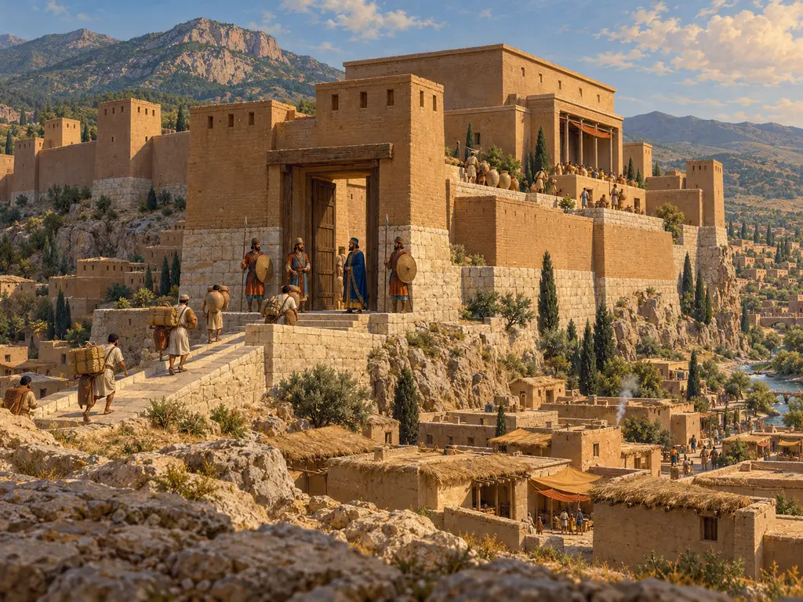
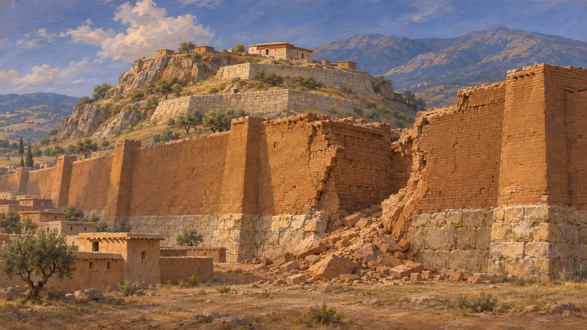
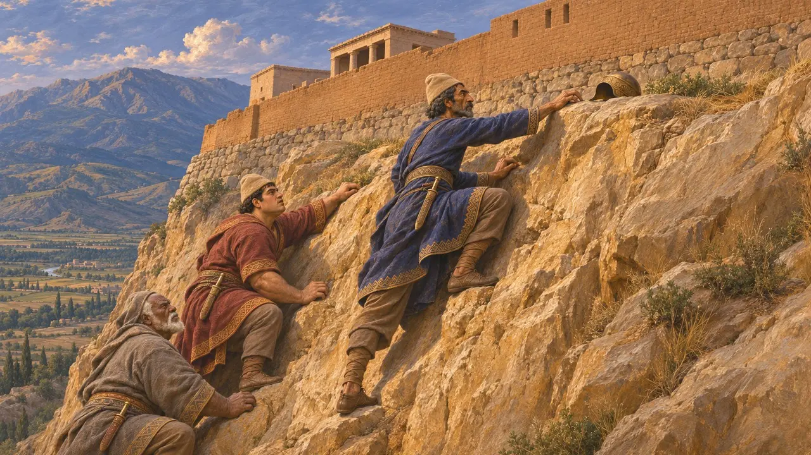
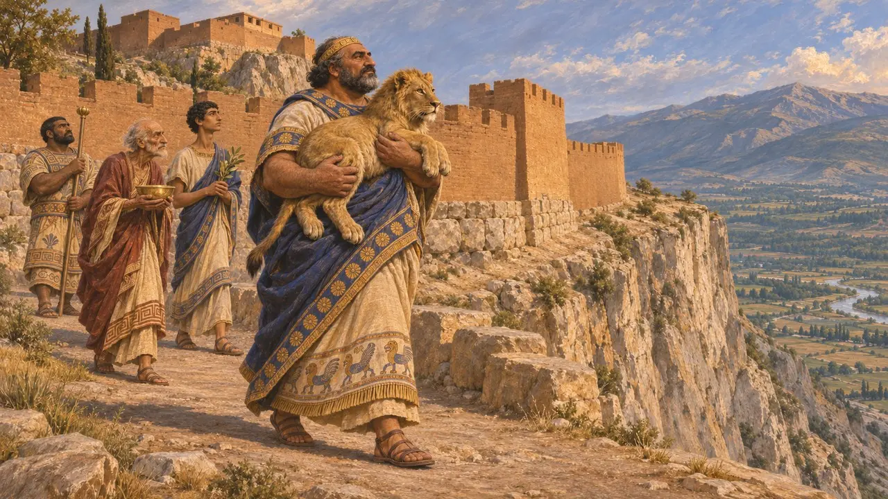
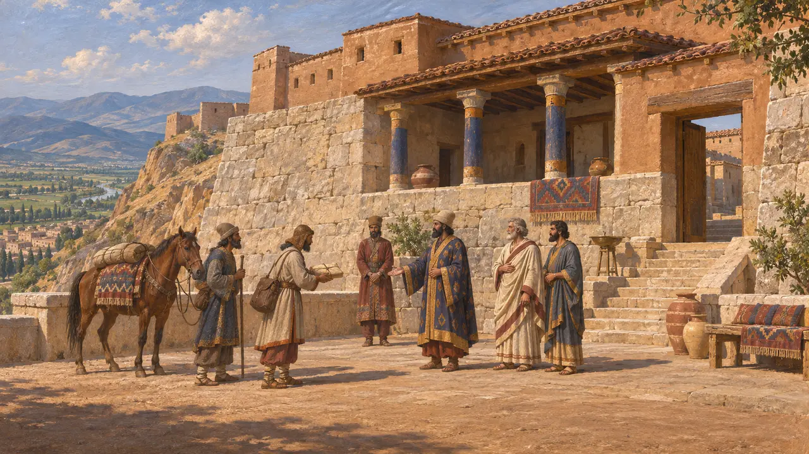
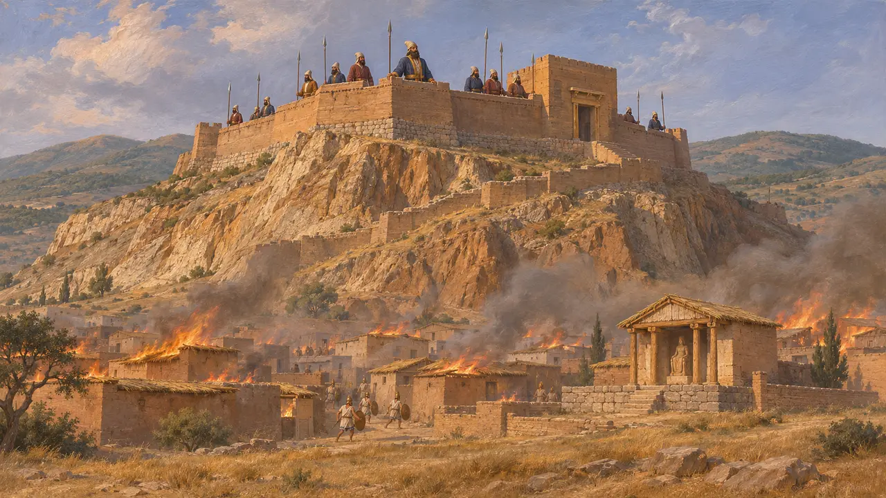

Zitadelle von Sardes
Akropolis der lydischen Könige und persischen Satrapen in Sardes, 6.–4. Jahrhundert v. Chr.
Im Spiel: Level 7: Sardes brennt
Die Zitadelle von Sardes lag auf einem steilen Ausläufer des Tmolos-Gebirges über der lydischen Hauptstadt. Die lydischen Könige hatten sie befestigt, Kyros nahm sie vermutlich in den 540er Jahren ein, und unter persischer Herrschaft war sie Sitz des Satrapen von Sparda und der stärkste Punkt am westlichen Ende der Königsstraße. 498 hielt sie stand, während ionische, athenische und eretrische Plünderer die Stadt zu ihren Füßen niederbrannten.
Im Spiel: Im Spiel wird die Zitadelle neu errichtet, mit Gold für Torhaus und Schatzhaus. Historisch waren ihre Mauern und Terrassen größtenteils lydisches Werk, das die Perser übernahmen, und das Gold ist eine Vereinfachung des Spiels.

Eine lydische Festung am Tmolos
Zeitgenössisch belegtAmerikanische Ausgrabungen haben seit 1958 lydische Terrassenmauern aus fein behauenem Stein auf der Akropolis nachgewiesen, auch wenn die Erosion einen Großteil der Hügelkuppe abgetragen hat. In der Unterstadt fanden Archäologen eine viele Meter dicke Befestigungsmauer aus Lehmziegeln auf einem Steinsockel, die Mitte des 6. Jahrhunderts zerstört wurde. Die meisten Forscher bringen diese Zerstörung mit der persischen Eroberung in Verbindung.
G. M. A. Hanfmann, Sardis from Prehistoric to Roman Times, 1983; N. Cahill (ed.), Love for Lydia, 2008

Kyros nimmt die Zitadelle ein
Antiker BerichtHerodot berichtet, Kyros habe Kroisos in der Ebene vor Sardes besiegt und ihn dann in der Stadt belagert. Am vierzehnten Tag sah ein mardischer Soldat namens Hyroiades, wie ein Verteidiger an der steilen, dem Tmolos zugewandten Seite hinabkletterte, um einen heruntergefallenen Helm zu holen, und führte daraufhin andere auf demselben Weg hinauf. Als Jahr wird meist etwa 547 angegeben, doch der Ortsname in der Nabonid-Chronik, der einst als Lydien gelesen wurde, ist beschädigt, sodass das Datum unsicher bleibt.
Herodotus 1.79-84; Nabonidus Chronicle

Meles und der Löwe
Spätere LegendeHerodot fügt eine Geschichte über die Mauern hinzu. Ein früherer König, Meles, trug auf Rat der Seher einen Löwen, den ihm seine Nebenfrau geboren hatte, rings um den Mauerring, damit die Mauern niemals eingenommen werden könnten. Die steile Seite zum Tmolos hin ließ er aus, weil dort niemand hinaufklettern konnte – und genau dort drangen die Perser ein. Die Erzählung erklärt eine überraschende Niederlage mit einem Fehler in einem alten Ritual.
Herodotus 1.84

Sitz des Satrapen von Sparda
Zeitgenössisch belegtDareios' Inschrift von Behistun nennt Sparda, den altpersischen Namen für Sardes und Lydien, unter den Ländern, die ihm gehorchten. Die Täfelchen aus dem Befestigungsarchiv von Persepolis verzeichnen Reisende auf der Straße zwischen Sardes und dem persischen Kernland. Ausgegrabene Siegel, Gräber und Gebäudereste zeigen eine persische Oberschicht, die in Sardes neben Lydern lebte und einen gemischten Stil in Kunst und Bestattung pflegte.
DB §6; E. Dusinberre, Aspects of Empire in Achaemenid Sardis, 2003

Gegen den Überfall von 498 gehalten
Antiker BerichtHerodot berichtet, die Ionier hätten mit ihren athenischen und eretrischen Verbündeten die Unterstadt ohne Widerstand eingenommen, doch Artaphernes habe die Akropolis mit einer starken Truppe gehalten. Ein Soldat setzte ein Haus in Brand, und die Flammen griffen auf die Schilfdächer über und verbrannten die Stadt samt dem Tempel der Göttin Kybebe. Arrian berichtet, die Zitadelle sei mit ihrer dreifachen Mauer noch immer sehr stark gewesen, als ihr Befehlshaber Mithrenes sie im Jahr 334 Alexander übergab.
Herodotus 5.99-102; Arrian, Anabasis 1.17
Quellen
- Herodotus 1.79-84
- Herodotus 5.99-102
- E. Dusinberre, Aspects of Empire in Achaemenid Sardis, 2003
- G. M. A. Hanfmann, Sardis from Prehistoric to Roman Times, 1983
- N. Cahill (ed.), Love for Lydia, 2008
- Arrian, Anabasis 1.17